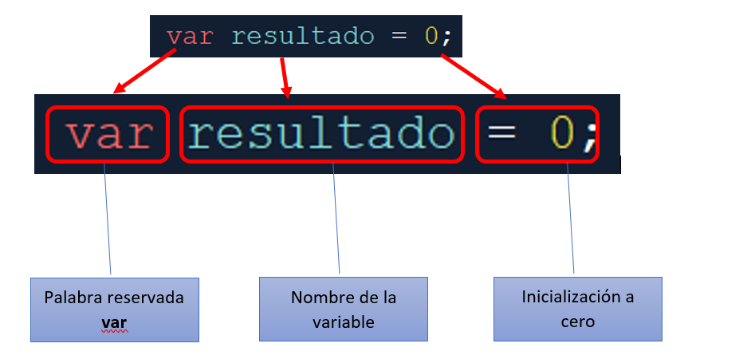
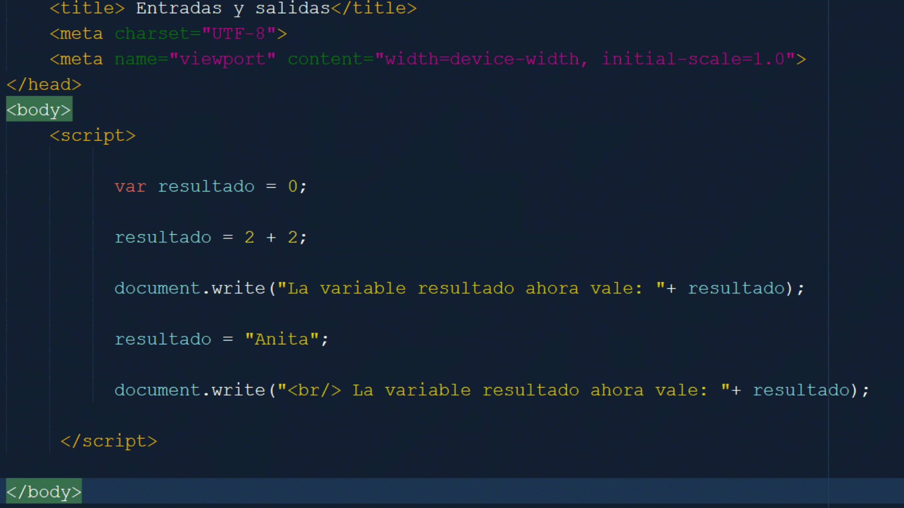
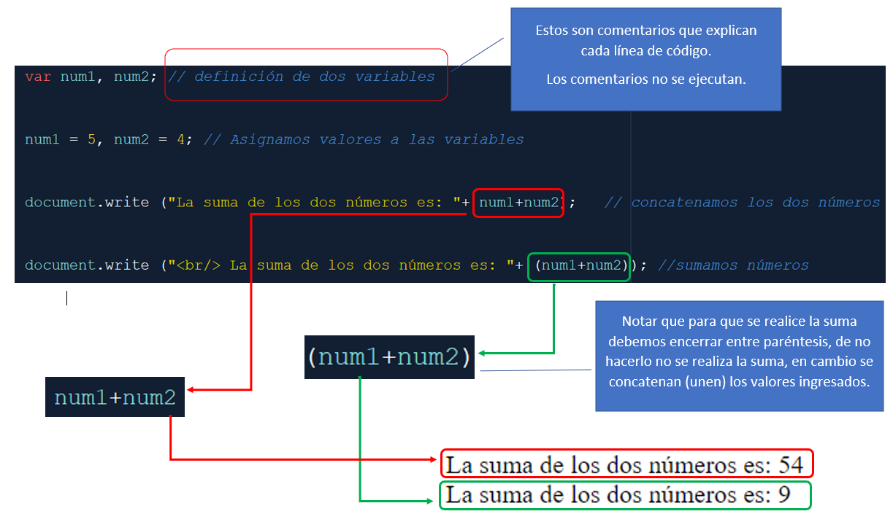
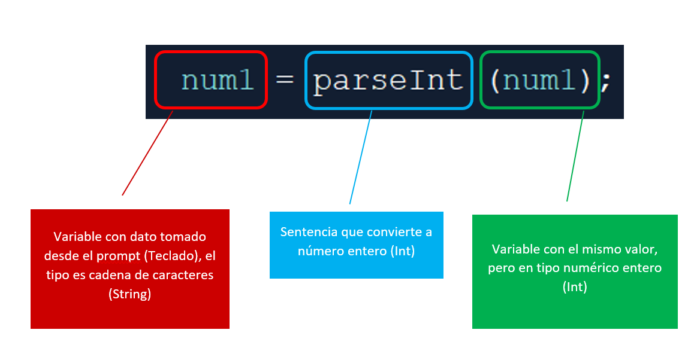

¿Qué es una variable en programación?
Este recurso está centralizado en Javascript, en este sentido hablaremos de las variables definidas dentro de este lenguaje. De todas formas el concepto de variable aplica a cualquier tecnología, si deseas profundizar el él puedes acceder a este recurso.
A modo de síntesis, cuando nos referimos a una variable en el mundo de la programación, hablamos de un elemento que sirve para guardar y hacer referencia a un determinado dato o valor, a éstas se accede mediante un nombre que se coloca al momento de su declaración.
Se debe aclarar que en Javascript los valores tomados desde el teclado son interpretados como texto, es decir el tipo de dato adjudicado por defecto es String (cadena de caracteres), claro que es posible convertir un String a otro tipo de dato, esa técnica se conoce como casteo.
Castear es convertir de un tipo de dato a otro. Por ejemplo de String a Int
Declaración en Javascript
Javascrip es un lenguaje muy flexible, esto permite algunas libertades que hacen más sencillo programar, veamos como aplica esto en el tema variables.
Repasemos algunas características de las variables:
- Deben tener un nombre que las identifique (es conveniente que el nombre haga referencia a la función que cumplirá la variable en el programa).
- Pueden y es aconsejable que sean inicializadas, esto implica que al momento de su declaración o previo a su utilización se les asigne un valor de inicio.
- Sí el valor que tienen se sustituye por otro valor, el valor anterior no se puede recuperar.
- Solo mantienen los valores en tiempo de ejecución del programa, esto implica que al cerrar el programa las variables pierden los datos que tienen, luego al iniciar nuevamente el programa vuelven a tomar el valor de inicialización definido por el programador.

Algunas cuestiones prácticas:
- Existen otras formas de declarar variables, pero en esta parte del curso utilizaremos esta.
- Javascript acepta que no se inicialice la variable (no aconsejable).
- Asigna un tipo por defecto, esto debido a que no es un lenguaje tipado.
- Acepta que no se coloque palabra reservada "var/let", esto no es aconsejable, pero Javascript lo permite.
Tal como vimos podemos imprimir el valor de una variable con las salidas vistas anteriormente.
También se puede utilizar "let" para definir variables dentro de un determinado bloque (variables locales). Existe la sentencia "const", para valores constantes o sea valores que serán fijos a lo largo de la ejecución del programa.
También se puede utilizar "let" para definir variables dentro de un determinado bloque (variables locales). Existe la sentencia "const", para valores constantes o sea valores que serán fijos a lo largo de la ejecución del programa.
Tipos
Como se mencionó al inicio Javascript no es un lenguaje tipado, esto quiere decir que no es requerido definir el tipo de dato que podrá almacenar la variable al momento de su definición. En otros lenguajes de programación es condición estricta definir de que tipo es la variable a definir, en consecuencia dicha variable solo admitirá datos de ese tipo, a estos lenguajes se les llama tipados.
Para comprender mejor este tema, se presenta un gif explicativo donde la variable "resultado" se inicializará en cero, luego se le asigna un valor resultante de la suma de dos números enteros (valor numérico), luego se le cargará un valor escrito "Anita" (valor de tipo String o cadena de caracteres) y en la misma ejecución la variable acepta ambos datos de igual forma. Por último se le asignará otro valor numérico resultante de la multiplicación de dos números, y también será admitido.

Ejemplo de uso
Se recomienda practicar ejecutando cada una de las situaciones presentadas como ejemplo de esta forma se logra un mayor manejo del tema, luego es recomendable experimentar realizando cambios sobre los ejemplos propuestos y ensayar ejecuciones para comprobar resultados.
Sumas de variables con datos predefinidos

Notar que en este caso los valores de las variables están definidos por el programador, en cada ejecución del porgrama su valor no cambia. Para que esto sea más eficiente se debe permitir al usuario ingresar los datos (ver sección Salidas y entradas).
Sumas de variables con datos ingresados por usuario

Se debe aclarar que si no se hace la conversión indicada en los recuadros verdes, los datos serán tomados como texto, por tal caso no se realizará la suma (Se realiza una concatenación).
Analicemos esa sentencia de conversión paso a paso:

La concatenación es la unión de dos o más elementos detipo texto, en programación se realiza ccon el signo de la suma (+).